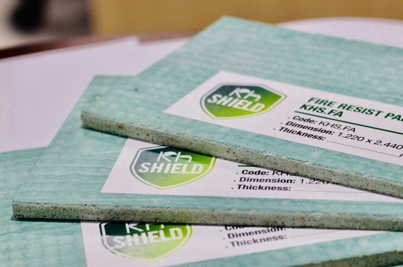

Hiện nay, tấm chống cháy đến từ thương hiệu KH Shield được ứng dụng trong nhiều giải pháp ngăn cháy và đã có mặt tại nhiều các công trình lớn trên cả nước. Sản phẩm là lựa chọn hàng đầu của các nhà thầu, và chủ đầu tư trong việc bảo đảm an toàn phòng chống cháy nổ cho công trình. Vậy tấm chống cháy của KH Shield có tính năng, ưu điểm gì vượt trội và khả năng ứng dụng ra sao?
Công ty cổ phần KH Shield được thành lập vào năm 2018 – là đơn vị chuyên sản xuất những sản phẩm và giải pháp chống cháy chuyên nghiệp và hiệu quả. Được mệnh danh là chuyên gia giải pháp chống cháy hàng đầu Việt Nam, cùng cam kết “3 chuyên”:
KH Shield đã và đang từng ngày mang đến sự yên tâm và tin cậy hoàn toàn với dịch vụ hỗ trợ tối đa, sản phẩm chất lượng ưu việt, giải pháp toàn diện, giúp khách hàng quản lý rủi ro và tháo gỡ các khó khăn về phòng cháy chữa cháy.
Sự độc quyền trong công nghệ FireShieldPro KHShield đã tạo ra những sản phẩm với những tính chất như không bắt lửa, không tạo khói đen, không độc tố, không gây hủy hoại và không ăn mòn kim loại. Sản phẩm này có khả năng tái chế không giới hạn, hoàn toàn thân thiện với môi trường, là sự lựa chọn chính xác và an tâm cho các nhà đầu tư hướng đến các giá trị xanh bền vững.
Với mục tiêu đảm bảo an toàn và bảo vệ công trình khỏi nguy cơ cháy nổ, vật liệu chống cháy đóng vai trò quan trọng trong ngành xây dựng và công nghiệp. KH Shield đã đưa ra những giải pháp sáng tạo và bền vững, tận dụng các vật liệu xanh để sản xuất những tấm chống cháy hiệu quả và thân thiện với môi trường.
Dựa vào các tiêu chí:
KH Shield đã tạo ra vật liệu chống cháy phù hợp từ phế phẩm nông nghiệp Việt Nam, khoáng chất thiên nhiên, lưới sợi thủy tinh và chất kết dính. Sản phẩm giữ vai trò làm giảm khả năng dẫn nhiệt, phù hợp để làm lõi và bọc cách nhiệt cũng như ốp trang trí cho các sản phẩm ngăn cách và cách nhiệt. Vật liệu chống cháy KH Shield không chỉ để đáp ứng nhu cầu an toàn cháy nổ, giúp doanh nghiệp quản lý rủi ro thiệt hại do hoả hoạn mà còn giúp cuộc sống trong lành hơn ở các công trình hiện nay.